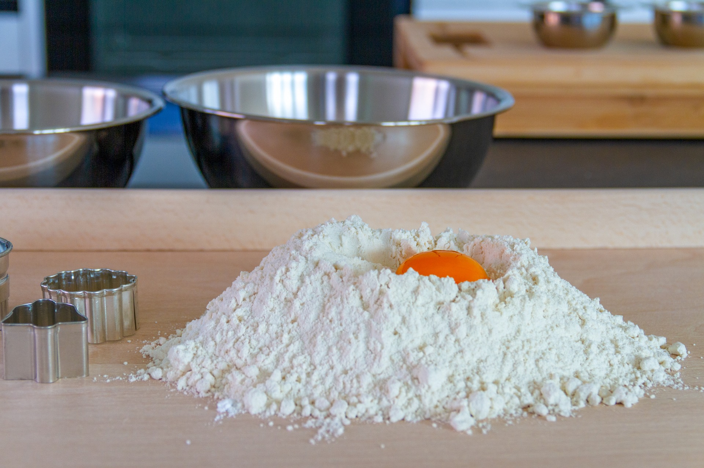

재료 및 분량
딸기, 밀가루 290g, 달걀 1개, 크림치즈 200g, 설탕 70g, 설탕 시럽, 생크림 160g, 물 100mL
만드는 법
-
밀가루, 달걀, 물을 볼에 넣고 잘 섞어준다.
-
냄비에 반죽을 넣고 약한 불에서 20분간 익혀준다. 잔열로 5분간 더 익혀준다.
다 익었으면 꺼낸 뒤 한 김 식힌다.
-
크림치즈 200g을 부드럽게 풀고 설탕 70g을넣고 섞는다.
-
케이크 시트를 3등분하여 1개를 밑에 깔고 설탕시럽을 바른다.
-
반으로 자른 딸기를 올려준 뒤, 만들었던 치즈크림을 딸기가 덮어질 정도로 채운다.
-
다시 케이크 시트를 올리고 설탕 시럽을 바른다.
-
시트 위에 생크림을 얇고 평평히 발라준 뒤 크림이 굳을 수 있게 냉장실에 3시간정도 넣어준다.
-
케이크가 굳었으면 딸기를 올려 장식해준다.
음식조리가이드
| 가열시간 |
조리과정 |
불조절 |
| 재료준비 |
밀가루, 계란, 물로 반죽 만들기 |
|
| 20min |
반죽 익히기 |
약한불 |
| 5min |
반죽 뜸들인 후 완성 |
잔열 |

[사진1] 밀가루, 달걀 및 재료
 [사진2] 딸기 케이크 완성
[사진2] 딸기 케이크 완성